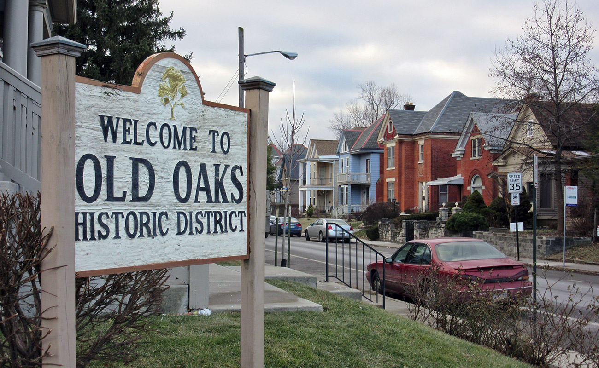

Challenges to the Project
Now that we have an idea, we needed permission from someone. Who that someone was, was a challenge in itself.
I reached out to Columbus Zoning via email and was waiting for their response. Meanwhile I was asking John if he knew who
needed to be contacted in regards to this project. He told me that the property was in the Old Oaks Historic District. I found
a FaceBook page for the district and reached out, give a brief description, and asked if there was somewhere I could be pointed to.
They reached out within 24 hours, giving me the contact information to the person in charge of the district.

I had a phone call meeting with the person in charge and went into detail about what the project was. After I gave my
brief presentation, he told me that I would have to submit an application to the board for this project. He directed me to the
application and told me that once I finish it I could send it to him for advice.
I was super excited. I finally found my answer! I filled out the application the next day and sent it to the person in charge.
This is what I got back:
"The application looks ok. I would change it to a request for action so if they approve you can build it. I do think it’s a long shot that they approve it though but it makes sense to to submit the application and see what their feedback is."
That was fun to hear... At the same time, I finally recieved information back from zoning.
"I have copied the response a coworker gave in response to a similar question regarding a mural.
“Murals” are not regulated by the City of Columbus and can be painted without permits or zoning clearance.
“Murals” are defined as a graphic displayed on the exterior of a building, generally for the purposes of decoration or artistic
expression without on- or off-premise advertising or commercial copy, including, but not limited to, painting, fresco or
mosaic. A mural that qualifies as an on- or off-premise sign shall be classified as a sign and not a mural.
Commercial buildings would be prohibited from displaying (in addition to commercial copy) any representation of the business itself; i.e. if there were a pet store on N. High
it could not display paintings of animals, or a pizza shop could not display paintings of pizzas.
This property is in an architectural review district, however, and any exterior changes will need to be approved by the Historic Resources Commission prior to installation. They can be reached by email at hrc@columbus.gov.
I would suggest sending me a proposal before applying for review by Historic Preservation.
Let me know if you have any additional questions."
The only thing I had left to do was send the application. So I sent the application back to zoning and awaited their response. Long story short, they don't know what to classify this project as. They don't know if it's a sign or if it's a mural so they said:
"This application will be placed on the agenda for the October 21st HRC hearing."
That did not work with my or John's timeline, so it was time to hit the drawing boards again.
See the next blog post: Redo
Return to the Mural Main Page